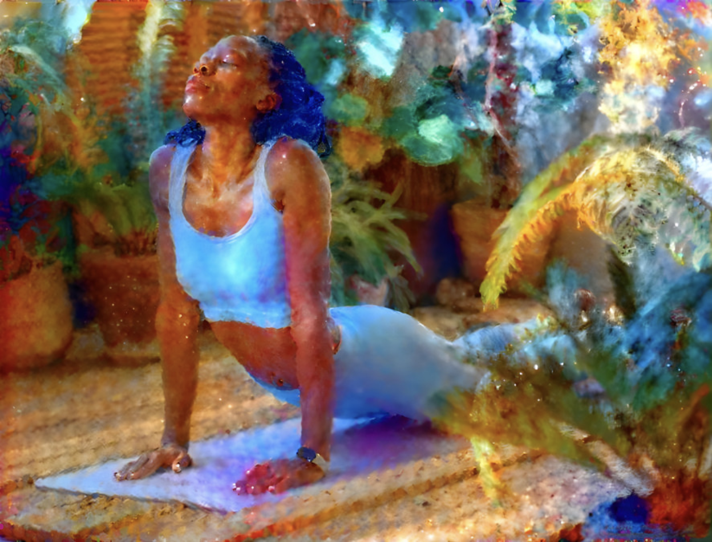

the continuity of consciousness

Listen
“House of the Rising Sun” — Ramin Djawadi, from the Westworld soundtrack.
This site serves as the online portfolio for Team William, HONORS 241 Fall 2026 at the University of Michigan.

“House of the Rising Sun” — Ramin Djawadi, from the Westworld soundtrack.
This site serves as the online portfolio for Team William, HONORS 241 Fall 2026 at the University of Michigan.